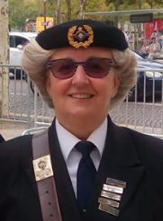
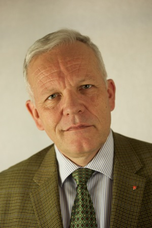

The Royal British Legion has been represented in France since 1921, when the Paris Branch was established.
The charitable aims of the organisation are identical to those of any other branch of the Royal British Legion in the world — to raise funds for those who have served in the British Armed Forces and who now find themselves in financial distress. The Legion also “flies the flag”, and each year the Union Flag and the RBL Standard are paraded on over 40 occasions.
However, in spite of all its other activities, the Branch does not lose sight of its primary purpose, which is to help ex-servicemen and their families who are in difficult circumstances. We have a certain number of clients to whom, in conjunction with the British Charitable Fund, we are able to render financial assistance and offer practical help in dealing with other problems. This is mainly financed by our Poppy Appeal. Collecting boxes, and poppies for donations, are placed in strategic places in Paris, and in addition a band of willing helpers distribute poppies outside the Cathedral on 11 November.
The Paris Branch plays an important part in the military and social life of Paris, as well as fulfilling to the very best of its ability its charitable function.
The British Legion in the United Kingdom was founded on 1 July 1921 by the amalgamation of four ex-servicemen’s associations. HRH the Prince of Wales became patron and Earl Haig became chairman.
The Paris Branch — the very first! In Paris, meanwhile, there was in existence a Veterans Association which met on 4 May 1921 to consider the formation of a branch of the British Legion. This was agreed and the Branch started to operate in June 1921, a week or two before the official formation of the British Legion in the United Kingdom. The British Ambassador, Lord Hardinge of Penshurst, and Marshal Foch consented to become Honorary Presidents of the branch, and the first chairman was Rear Admiral Sir Edward Heaton-Ellis. At the time there were a considerable number of ex-servicemen in France, many of whom had fallen on hard times financially, and the branch was kept busy dealing with the many problems.
For details of some history and events, see: 11 November — Notre Dame › · 4 August — Rekindling the Flame › · 50th Anniversary of VE Day ›
History of the Paris Branch › — full history, with a link to the original PDF.
The Paris Branch has some 150 members — and is more than willing to increase that number should you care to join us. We have members of several nationalities, some have served in the British Armed Forces, some in the French Armed Forces, and some who have never served in any armed forces at all. All are welcome.
Amongst those you are likely to meet in the Paris Branch are:


British Legion members are welcome to use the facilities we provide in Central Paris. Why not join us for one of our monthly lunches (or just drop in for a drink while we are having one)? See the Events page › for dates and how to book.
If we can help you with information on your stay in Paris, please contact the Branch via the Membership page ›.
With some regret, in 2009, the Paris Branch left its premises at 8 rue Boudreau, near the Opéra, which had housed the activities of the Paris Branch for about 60 years. New legislation on the need for fire exits, access for the handicapped, and so on, finally made a move inevitable. This was accomplished to general satisfaction. Our address is now 28 rue des Acacias, Paris 17.
Our new premises have the legally prescribed facilities and they have proved eminently satisfactory. Activities include a monthly lunch — see the dates and how to reserve this and our other many events on the Events page ›. The premises can be made available, by arrangement, to members and other organisations for private functions, and catering facilities are an option.
 River Cruises
River Cruises France's English newspaper
France's English newspaper British pies & bangers
British pies & bangers English for learners
English for learners